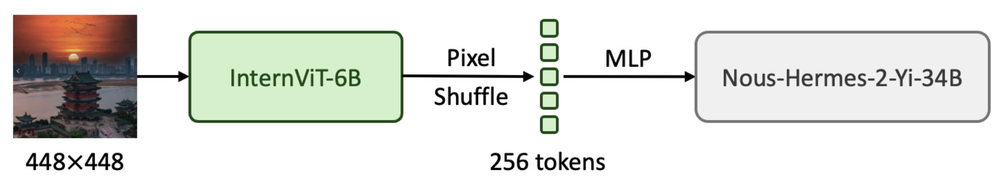

InternVL 1.2: Scaling up LLM to 34B
[🆕 Go Back] [📜 InternVL 1.0 Paper] [📜 InternVL 1.5 Report] [🗨️ Chat Demo] [🤗 HF Demo] [ ModelScope] [🚀 Quick Start] [📖 中文解读]
ModelScope] [🚀 Quick Start] [📖 中文解读]
| Type | Model | Date | Download | Note |
|---|---|---|---|---|
| Vision Large Language Model | InternVL-Chat-V1-2-Plus | 2024.02.21 | 🤗 HF link | more SFT data and stronger |
| InternVL-Chat-V1-2 | 2024.02.11 | 🤗 HF link | scaling up LLM to 34B | |
| Vision Foundation Model | InternViT-6B-448px-V1-2 | 2024.01.30 | 🤗 HF link | vision foundation model, 448 resolution |
InternVL-Chat-V1-2
We are excited to introduce InternVL-Chat-V1-2. Inspired by LLaVA-NeXT-34B, we have also adopted Nous-Hermes-2-Yi-34B as the language model. Below is the pipeline.

From the experimental results, we've observed that a stronger language model (34B) can better leverage the powerful capabilities of our vision foundation model.
For better training reproducibility, we follow the minimalist design and data efficiency similar to LLaVA-NeXT. To reduce training costs, we provide a pre-trained MLP projector and only employ around 1.2 million visual instruction tuning samples for SFT. Our model has a total of 40 billion parameters and can be trained within 1.5 days using 32 A100 GPUs. The code, data, and model have been made publicly available.
Data Preparation
Inspired by LLaVA-NeXT, we adopted a data-efficient SFT strategy to train InternVL-Chat-V1-2, utilizing approximately 1.2M of visual instruction tuning samples in total, all of which are fully open-source. In a macro sense, we build upon ShareGPT-4V and additionally integrate LLaVA-ZH, DVQA, ChartQA, AI2D, DocVQA, GeoQA+, and SynthDoG-EN. Most of the data remains consistent with LLaVA-NeXT.
Model Card
| Name | InternVL-Chat-V1-2 | InternVL-Chat-V1-2-Plus | |
|---|---|---|---|
| Model Size | Total | 40.07B | |
| ViT | 5.54B | ||
| MLP | 143.17M | ||
| LLM | 34.39B | ||
| Resolution | 448 × 448 | ||
| Training Data | Trained on 39.3 million samples, including COYO, LAION, CC12M, CC3M, SBU, Wukong, GRIT, Objects365, OpenImages, and OCR-related datasets. In this stage, we first load the pre-trained weights of InternViT-6B-448px-V1-0 and connect it to Nous-Hermes-2-Yi-34B. After pre-training, the extracted ViT is published as InternViT-6B-448px-V1-2. | ||
| Trainable Module | ViT + MLP | ||
| Stage-2 | Training Data | Open-sourced 1.2M visual instruction tuning samples. | A comprehensive collection of open-source datasets, along with their Chinese translation versions, totaling approximately 12M samples. |
| Trainable Module | ViT + MLP + LLM | ||
Training (SFT)
We provide slurm scripts for multi-node multi-GPU training. You can use either 32 or 64 GPUs to train this model. If you use 64 GPUs, training will take approximately 18 hours.
The hyperparameters used for fine-tuning are listed in the following table.
| Size | Stage | Trainable Module | #Sample | Drop Path | Batch Size | LR | Epoch | Max Length | Weight Decay | Config | Download |
|---|---|---|---|---|---|---|---|---|---|---|---|
| 40B | Pretrain | ViT + MLP | 39.3M | 0.2 | 8192 | 2e-5 | 1 | 384 | 0.05 | - | ViT / MLP |
| Finetune | ViT + MLP + LLM | 1.2M | 0.4 | 512 | 1e-5 | 1 | 2048 | 0.05 | Link | MLLM |
Performance
* Proprietary Model
| name | image size | MMMU (val) |
MMMU (test) |
MathVista (testmini) |
MMB (test) |
MMB-CN (test) |
MMVP | MME | SQA (image) |
POPE | TextVQA (val) |
SEED (image) |
VizWiz (test) |
GQA (test) |
|---|---|---|---|---|---|---|---|---|---|---|---|---|---|---|
| GPT-4V* | unknown | 56.8 | 55.7 | 49.9 | 77.0 | 74.4 | 38.7 | 1409/517 | - | - | 78.0 | 71.6 | - | - |
| Gemini Ultra* | unknown | 59.4 | - | 53.0 | - | - | - | - | - | - | 82.3 | - | - | - |
| Gemini Pro* | unknown | 47.9 | - | 45.2 | 73.6 | 74.3 | 40.7 | 1497/437 | - | - | 74.6 | 70.7 | - | - |
| Qwen-VL-Plus* | unknown | 45.2 | 40.8 | 43.3 | 67.0 | 70.7 | - | 1681/502 | - | - | 78.9 | 65.7 | - | - |
| Qwen-VL-Max* | unknown | 51.4 | 46.8 | 51.0 | 77.6 | 75.7 | - | 1790/644 | - | - | 79.5 | - | - | - |
| LLaVA-NEXT-34B | 672x672 | 51.1 | 44.7 | 46.5 | 79.3 | 79.0 | - | 1631/397 | 81.8 | 87.7 | 69.5 | 75.9 | 63.8 | 67.1 |
| 448x448 | 51.6 | 46.2 | 47.7 | 82.2 | 81.2 | 56.7 | 1687/489 | 83.3 | 88.0 | 72.5 | 75.6 | 60.0 | 64.0 |
- MMBench results are collected from the leaderboard.
- In most benchmarks, InternVL-Chat-V1-2 achieved better performance than LLaVA-NeXT-34B.
- Update (2024-04-21): We have fixed a bug in the evaluation code of TextVQA, and the result has been corrected to 72.5.
InternVL-Chat-V1-2-Plus
InternVL-Chat-V1-2-Plus uses the same model architecture as InternVL-Chat-V1-2, but the difference lies in the SFT dataset. InternVL-Chat-V1-2 only utilizes an SFT dataset with 1.2M samples, while our plus version employs an SFT dataset with 12M samples.
Performance
* Proprietary Model † Training Set Observed
| name | image size | MMMU (val) |
MMMU (test) |
MathVista (testmini) |
MMB (test) |
MMB-CN (test) |
MMVP | MME | SQA (image) |
POPE | TextVQA (val) |
SEED (image) |
VizWiz (test) |
GQA (test) |
|---|---|---|---|---|---|---|---|---|---|---|---|---|---|---|
| GPT-4V* | unknown | 56.8 | 55.7 | 49.9 | 77.0 | 74.4 | 38.7 | 1409/517 | - | - | 78.0 | 71.6 | - | - |
| Gemini Ultra* | unknown | 59.4 | - | 53.0 | - | - | - | - | - | - | 82.3 | - | - | - |
| Gemini Pro* | unknown | 47.9 | - | 45.2 | 73.6 | 74.3 | 40.7 | 1497/437 | - | - | 74.6 | 70.7 | - | - |
| Qwen-VL-Plus* | unknown | 45.2 | 40.8 | 43.3 | 67.0 | 70.7 | - | 1681/502 | - | - | 78.9 | 65.7 | - | - |
| Qwen-VL-Max* | unknown | 51.4 | 46.8 | 51.0 | 77.6 | 75.7 | - | 1790/644 | - | - | 79.5 | - | - | - |
| LLaVA-NEXT-34B | 672x672 | 51.1 | 44.7 | 46.5 | 79.3 | 79.0 | - | 1631/397 | 81.8 | 87.7 | 69.5 | 75.9 | 63.8 | 67.1† |
| InternVL-Chat-V1-2 | 448x448 | 51.6 | 46.2 | 47.7 | 82.2 | 81.2 | 56.7 | 1687/489 | 83.3 | 88.0 | 72.5 | 75.6 | 60.0 | 64.0† |
| 448x448 | 50.3 | 45.6 | 59.9 | 83.8 | 82.0 | 58.7 | 1625/553 | 98.1† | 88.7 | 74.1† | 76.4 | 59.5 | 66.9† |
- MMBench results are collected from the leaderboard.
- Update (2024-04-21): We have fixed a bug in the evaluation code of TextVQA, and the results have been corrected to 74.1.
Citation
@article{chen2023internvl,
title={InternVL: Scaling up Vision Foundation Models and Aligning for Generic Visual-Linguistic Tasks},
author={Chen, Zhe and Wu, Jiannan and Wang, Wenhai and Su, Weijie and Chen, Guo and Xing, Sen and Zhong, Muyan and Zhang, Qinglong and Zhu, Xizhou and Lu, Lewei and Li, Bin and Luo, Ping and Lu, Tong and Qiao, Yu and Dai, Jifeng},
journal={arXiv preprint arXiv:2312.14238},
year={2023}
}
@article{chen2024far,
title={How Far Are We to GPT-4V? Closing the Gap to Commercial Multimodal Models with Open-Source Suites},
author={Chen, Zhe and Wang, Weiyun and Tian, Hao and Ye, Shenglong and Gao, Zhangwei and Cui, Erfei and Tong, Wenwen and Hu, Kongzhi and Luo, Jiapeng and Ma, Zheng and others},
journal={arXiv preprint arXiv:2404.16821},
year={2024}
}